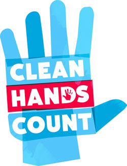

Healthcare Providers
 ShareCompartir
ShareCompartir
Clean Hands Count for Healthcare Providers
Protect yourself and your patients from potentially deadly germs by cleaning your hands. Be sure you clean your hands the right way at the right times.
Introduction to Hand Hygiene
What is Hand Hygiene?
Hand Hygiene means cleaning your hands by using either handwashing (washing hands with soap and water), antiseptic hand wash, antiseptic hand rub (i.e. alcohol-based hand sanitizer including foam or gel), or surgical hand antisepsis
Why Practice Hand Hygiene?
Cleaning your hands reduces:
- The spread of potentially deadly germs to patients
- The risk of healthcare provider colonization or infection caused by germs acquired from the patient
Two Methods for Hand Hygiene: Alcohol-Based Hand Sanitizer vs. Washing with Soap and Water
- Alcohol-based hand sanitizers are the most effective products for reducing the number of germs on the hands of healthcare providers. Antiseptic soaps and detergents are the next most effective and non-antimicrobial soaps are the least effective.
- When hands are not visibly dirty, alcohol-based hand sanitizers are the preferred method for cleaning your hands in the healthcare setting.
- Soap and water are recommended for cleaning visibly dirty hands
During Routine Patient Care:
| Wash with soap and water | Use an Alcohol-Based Hand Sanitizer |
|---|---|
|
|
When and How to Perform Hand Hygiene
When to Perform Hand Hygiene
Clean your hands:
- Before eating
- Before and after having direct contact with a patient's intact skin (taking a pulse or blood pressure, performing physical examinations, lifting the patient in bed)
- After contact with blood, body fluids or excretions, mucous membranes, non-intact skin, or wound dressings
- After contact with inanimate objects (including medical equipment) in the immediate vicinity of the patient
- If hands will be moving from a contaminated-body site to a clean-body site during patient care
- After glove removal
- After using a restroom
Techniques for Using Alcohol-Based Hand Sanitizer
When using alcohol-based hand sanitizer:
- Put product on hands and rub hands together
- Cover all surfaces until hands feel dry
- This should take around 20 seconds
Techniques for Washing Hands with Soap and Water
- The CDC
Guideline for Hand Hygiene in Healthcare Settings
recommends:
- When cleaning your hands with soap and water, wet your hands first with water, apply the amount of product recommended by the manufacturer to your hands, and rub your hands together vigorously for at least 15 seconds, covering all surfaces of the hands and fingers.
- Rinse your hands with water and use disposable towels to dry. Use towel to turn off the faucet.
- Avoid using hot water, to prevent drying of skin.
- Other entities have recommended that cleaning your hands with soap and water should take around 20 seconds.
- Either time is acceptable. The focus should be on cleaning your hands at the right times.
Glove Use
When and How to Wear Gloves
- Wearing gloves is not a substitute for hand hygiene. Dirty gloves can soil hands.
- Always clean your hands after removing gloves.
- Steps for Glove Use:
- Choose the right size and type of gloves for the task
- Put on gloves before touching a patient’s non-intact skin, open wounds or mucous membranes, such as the mouth, nose, and eyes
- Change gloves during patient care if the hands will move from a contaminated body-site (e.g., perineal area) to a clean body-site (e.g., face)
- Remove gloves after contact with a patient and/or the surrounding environment (including medical equipment) using proper technique to prevent hand contamination
- Failure to remove gloves after caring for a patient may lead to the spread of potentially deadly germs from one patient to another
- Do not wear the same pair of gloves for the care of more than one patient
Hand Hygiene for Surgery
Surgical Hand Antisepsis
- Remove rings, watches, and bracelets before beginning the surgical hand scrub
- Remove debris from underneath fingernails using a nail cleaner under running water
- Performing surgical hand antisepsis using either an antimicrobial soap or an alcohol-based hand sanitizer with persistent activity is recommended before donning sterile gloves when performing surgical procedures
- When performing surgical hand antisepsis using an antimicrobial soap, scrub hands and forearms for the length of time recommended by the manufacturer, usually 2–6 minutes.
- Long scrub times (e.g., 10 minutes) are not necessary
- When using an alcohol-based surgical hand-scrub product with persistent activity, follow the manufacturer's instructions
- Before applying the alcohol solution, prewash hands and forearms with a non-antimicrobial soap and dry hands and forearms completely
- After application of the alcohol-based product as recommended, allow hands and forearms to dry thoroughly before donning sterile gloves
- Double gloving is advised during invasive procedures, such as surgery, that pose an increased risk of blood exposure
- Bacteria on the hands of surgeons can cause wound infections if introduced into the operative field during surgery
- Rapid multiplication of bacteria occurs under surgical gloves if hands are washed with a non-antimicrobial soap
- Bacterial growth is slowed after preoperative scrubbing with an antiseptic agent
- Reducing resident skin flora on the hands of the surgical team for the duration of a procedure reduces the risk of bacteria being released into the surgical field if gloves become punctured or torn during surgery
Skin and Nail Care
Methods to Maintain Hand Skin Health
- Lotions and creams can prevent and decrease skin dryness that happens from cleaning your hands
- Use only hand lotions approved by your healthcare facility because they won’t interfere with hand sanitizing products
Fingernail Care and Jewelry
- Germs can live under artificial fingernails both before and after using an alcohol-based hand sanitizer and handwashing
- It is recommended that healthcare providers do not wear artificial fingernails or extensions when having direct contact with patients at high risk (e.g., those in intensive-care units or operating rooms)
- Keep natural nail tips less than ¼ inch long
- Some studies have shown that skin underneath rings contains more germs than comparable areas of skin on fingers without rings
- Further studies are needed to determine if wearing rings results in an increased spread of potentially deadly germs
- Page last reviewed: March 15, 2016
- Page last updated: April 28, 2016
- Content source: